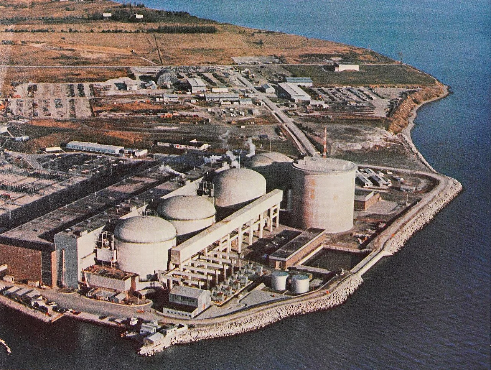
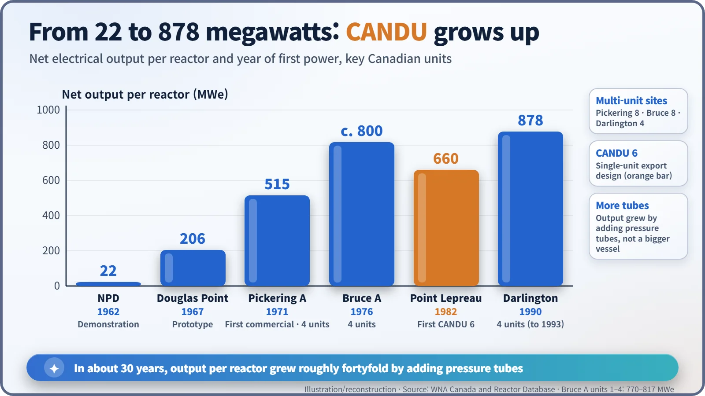
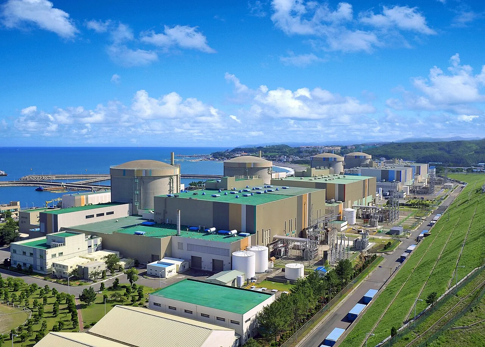
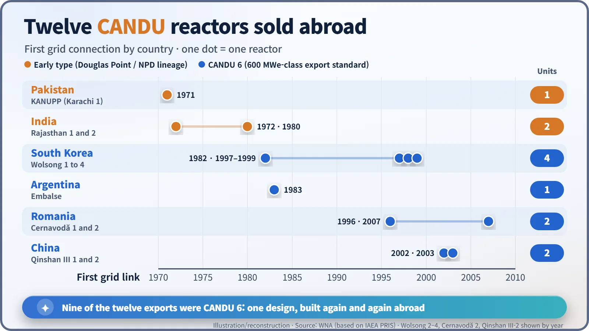

Nuclear History · 205
New Year's Eve Power from a Canadian Reactor: How CANDU Went Commercial and Went Abroad (1967–1990s)
From a 206-megawatt prototype in 1967 to 878-megawatt units by 1993, and a 600-megawatt standard model that carried Canadian heavy-water technology to Korea, Argentina, Romania and China.
After proving natural uranium and heavy water with a small demonstration plant, Canada scaled CANDU up from the 206-megawatt Douglas Point prototype (1967) to the first commercial station at Pickering (1971) and the 878-megawatt units of Darlington (1990–1993). A 600-megawatt standard model, the CANDU 6, then carried the design abroad: of the twelve CANDU reactors Canada sold to six countries, nine were CANDU 6.
New Year's Eve on the Korean coast
On 31 December 1982, while most people were winding down the year, the first unit at the Wolsong nuclear power plant on South Korea's east coast sent electricity into the grid for the first time. [2] It was not an American-style light-water reactor like Korea's first plant at Kori. It was a Canadian pressurised heavy-water reactor, a CANDU. How did a technology born beside the lakes of Ontario end up on the other side of the world? The story starts fifteen years earlier, on a Canadian lakeshore.
From demonstration plant to real power station
Canada had no uranium enrichment plant. What it did have was experience with heavy water. Heavy water absorbs hardly any neutrons, so it lets a chain reaction run on natural uranium straight from the mine, in which only about 0.7% is the easily split uranium-235. In 1962 the 22-megawatt NPD demonstration reactor showed that this road worked. [1]
The next challenge was size. The Douglas Point prototype on the shore of Lake Huron first sent power to the grid in January 1967. At 206 megawatts net it was more than nine times the size of NPD. [1] [4] The trick was the pressure-tube design championed by W. Bennett Lewis (1908–1987) of Atomic Energy of Canada Limited (AECL). Instead of one huge steel pot holding all the pressure, hundreds of slender tubes shared the load, so a bigger reactor simply needed more tubes.
Pickering, Bruce and Darlington: giants on the lakeshore
Commercial nuclear power in Canada began on the shore of Lake Ontario, east of Toronto. Ontario Hydro's Pickering unit 1 was connected to the grid on 4 April 1971 and entered commercial operation on 29 July. Each reactor delivered 515 megawatts net, and the four units of Pickering A made up the world's first commercial CANDU station. [1] [2]

The units kept growing. Bruce, on Lake Huron, started with four reactors of about 800 megawatts each between 1976 and 1978 and had eight by 1987; Pickering added four more in the 1980s. The last big project was Darlington, whose four 878-megawatt reactors joined the grid one by one between 1990 and 1993. [1] In the roughly 30 years from NPD to Darlington, the output of a single reactor grew about fortyfold.

A standard model for export: CANDU 6
For export, Canada developed a 600-megawatt-class standard design that could be built one unit at a time: the CANDU 6. With 380 fuel channels and fuel bundles of 37 elements each, [5] it was first connected to the grid on 11 September 1982 at Point Lepreau in New Brunswick, eastern Canada. Quebec's Gentilly-2 was a CANDU 6 too. The two later took different paths: Point Lepreau became the first CANDU 6 to go through a full refurbishment, while Quebec, after first deciding to refurbish Gentilly-2, chose in 2012 to close it after about 30 years of operation. [1] [2]
Think of the CANDU 6 as a catalogue product: rather than commissioning a new design, a customer could order a standard one, with a reference plant already running in Canada.
The same design then went overseas. A few months later, on 31 December 1982, Korea's Wolsong 1 followed, and Argentina's Embalse came next in April 1983. Romania's Cernavodă 1 reached the grid only in 1996, thirteen years after construction began. South Korea built three more units, Wolsong 2 to 4, in 1997–1999, and China's two Qinshan III units started up in 2002–2003. [2] [5]

Why choose heavy water?
Natural uranium fuel means there is no need to buy enrichment services, which appealed to countries that wanted to widen their sources of fuel. On-power refuelling, changing fuel without shutting the reactor down, was another selling point. The price was heavy water, which is expensive: one analysis puts the heavy water for Darlington at about 11% of the station's total capital cost. [5] And after several decades of operation, the reactors need a major overhaul, known as refurbishment, to replace their pressure tubes. [1]
Twelve exports, nine of them CANDU 6
Canada sold twelve CANDU reactors to six countries: four to South Korea, two each to Romania, China and India, and one each to Argentina and Pakistan. [1] Nine of the twelve were CANDU 6. The other three belonged to an earlier generation: Pakistan's KANUPP, connected to the grid in 1971, and India's Rajasthan units 1 and 2, modelled on Douglas Point, which started up in 1972 and 1980. [3]

The partnership with India ran into trouble. The plutonium for India's 1974 nuclear test came from CIRUS, a research reactor that Canada had supplied, not from a CANDU power reactor. [3] Canada suspended cooperation that year and formally ended it in 1976. India went on to develop its own pressurised heavy-water reactors from the design.
What came next
New orders were rare after the 1990s. In 2011 AECL's reactor division was sold to a subsidiary of the private company SNC-Lavalin, while the government kept the intellectual property. Wolsong 1 was permanently shut down in December 2019, and Pickering units 1 and 4 ended operation in 2024. [1] [2] Today a little over twenty CANDU reactors still run in several countries.
Canada chose to save neutrons rather than enrich uranium, polished that choice into a standard design and sent it to four continents. CANDU is a clear reminder that a reactor type grows out of a nation's resources and industrial strengths.